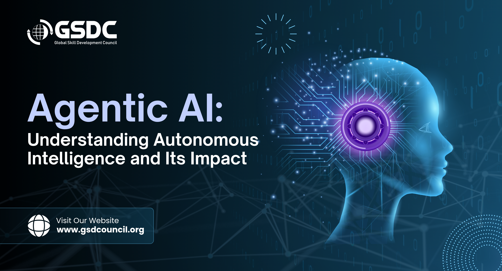

Agentic AI refers to artificial intelligence systems that can act autonomously to achieve specific goals These systems are designed to make decisions and take actions in complex, dynamic environments without direct human intervention. Agentic AI is an autonomous system that uses large language models (LLMs) to set goals, break them into multi-step plans, and execute tasks using external tools—all with minimal human oversight Unlike traditional chatbots that only respond to prompts, these agents act, adapt, and iterate.
